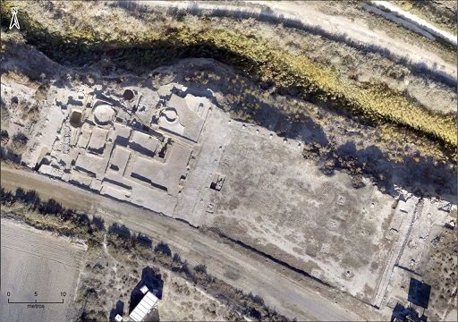

|
ZARAGOZA
ROMANA
- En el Burgo de Ebro destaca el
yacimiento iberorromano de La Cabañeta. Data del siglo II a.e.c. En el
yacimiento, hay desde edificios termales a restos de zonas de servicios,
complejos de transformación de alimentos de alimentos, almacenes, el
foro…

- Próximo a Zaragoza está el castillo de
Miranda, en él se han encontrado materiales ibéricos y romanos.
- En Mediana de Aragón, se encuentra el yacimiento de Los Castellazos,
habitado desde la Primera Edad del Hierro hasta el s. I a.e.c.
- Otro de
estos asentamientos es el de Cabezo Gordo, en La Zaida.
- En Azuara destacan los restos de época romana, entre los que cabe
señalar la villa de La Malena, donde se hallaron notables mosaicos que
siguen modelos del s. IV.
- En Velilla de Ebro la antigua Celsa, colonia romana; paso obligado sobre
el río, puesto que poseía el único puente sobre el Ebro desde Tortosa. Se
han hallado restos de su urbanismo, un teatro y varias domus con restos de
decoración pictórica y mosaicos, así como diversas piezas que se pueden
ver en el Museo anexo.
- En Maella se conservan restos prehistóricos como el yacimiento de la Costalena, y los restos de un poblado ibero-romano, el Tossal Gort, que
estuvo habitado entre los siglos IV a.e.c. y IV.
- En La Almunia se localiza la
ciudad céltico-romana de Nertóbriga.
- En Aranda de Moncayo, destaca
el yacimiento celtíbero de Aratikos y una fuente romana del siglo III
reconstruida.
- En Fabara se halla un asentamiento de la Primera Edad del Hierro, el Roquizal del Rullo y el mausoleo romano de finales del siglo II, muy bien
conservado.
- Cerca de Chiprana encontramos otro asentamiento de la Edad del Hierro,
el cabezo Torrente, y una villa romana en el lugar llamado Dehesa de los
Baños y, en la misma Chiprana, un mausoleo romano de gran interés.
- Así mismo, la comarca de las Cinco Villas conserva importantes restos.
El sarcófago romano de Castiliscar, material epigráfico y arquitectónico
integrado en algunas casas actuales de Sofuentes, y dos mausoleos romanos
en Sádaba: el de los
Atilios de finales del s. II y el de la Sinagoga. La Sinagoga de época
bajoimperial mitad del s. IV; en sus proximidades se conservan restos de
una villa romana. En la campaña de prospecciones de marzo de 2021 llevada
a cabo en el municipio de Castiliscar ha sacado a la luz un monumento
funerario de notable envergadura, con más de 20 metros de lado, uno de
los más grandes localizados hasta ahora en la comarca. La excavación
completa del recinto confirmará si se trata de un templo o un altar.
Los restos arqueológicos se encuentran en Sonavilla,
emplazamiento en el que existió una antigua villa romana.
- En Sos del Rey Católico, destaca el yacimiento romano de Cabeza
Ladrero. En junio de 2024, en la necrópolis, se han descubierto 60
enterramientos de época romana.
- En el término de Uncastillo destaca el acueducto de
Los Bañales,
el complejo termal y los restos de la ciudad romana.
- En Campo Real, quedan restos de una villa romana que se abandonó en el
Bajo Imperio.
- En Monreal de Ariza destaca el asentamiento de Cerro Villar identificado
con la antigua Arcóbriga, con restos de murallas, templo, teatro y
conjunto
termal.
- Entre Belmonte de Gracián y
Mara, se pueden ver las imponentes murallas de un yacimiento identificado
con la antigua Segeda. Destaca el buen estado de la muralla celtibera, el
lagar más antiguo
hallado en Europa del s. V a.e.c., restos de un edificio monumental,
monedas,
cerámica, semillas ...
-Bilbilis,
Calatayud.
-Caesaraugusta,
Zaragoza.
- En el valle del Huerva, es de gran valor histórico el yacimiento del
Cabezo de las Minas, en Botorrita (antigua Contrebia Belaisca); además de
un
templo, se han hallado cuatro bronces escritos, tres en celtibérico y uno
en latín.
- En Biota se halla el Bustum, antigua pira funeraria donde se quemaban
los cadáveres.
- En Muel se hallan los restos romanos de la presa del siglo I.
- En Caspe se halla el mausoleo romano
de Miralpeix del siglo II-III.
- En Almonacid de la Cuba
se localiza los restos de la presa de época
romana del siglo I. Uno de las obras hidráulicas más importantes de la
Hispania romana.
- En Almada de Villareal destaca el puente romano, reconstruido
posteriormente.
- En Epila se halla el puente romano sobre el río Jalón datado en el siglo
III.
- En Tarazona se halla la ciudad celtibera-romana de Turiaso.
- El asentamiento romano, situado en el municipio de Belchite, ocupado
durante el sigo I a.e.c y el III. Destaca el hallazgo de una urna
funeraria de
vidrio y un ajuar formado por un vaso, decorado con escenas de
gladiadores, cuentas de collar de fayenza y una jarra de cerámica.
- En Artieda un agricultor arando el campo, tropezó con una columna.
Gracias a esta casualidad, en el municipio se descubrieron en el verano
del 63
un poblado de época romana fortificado, los restos de dos villas y una
pequeña necrópolis. La villa romana de Rienda. Se realizó una excavación,
la
columna pertenecía a una villa romana datada de entre los siglos I y III.
También se descubrió un precioso mosaico de unos 90 m2., que terminó en
el museo provincial de Zaragoza. Destacan tres yacimientos arqueológicos:
El Forau de la Tuta, Campo de la Virgen y Campo del Royo. El yacimiento
de el Forau de la Tuta se sitúa a kilómetro y medio de Artieda.
Los especialistas han descubierto que
los tres yacimientos forman parte de un mismo conjunto de un tamaño todavía por
determinar en el que se han encontrado dos niveles de ocupación: una ciudad
romana de época imperial, datada entre los siglos I al V y una villa medieval.
Desde 2018, se ha descubierto una ciudad
romana con pórticos, termas, cloacas y posiblemente un templo. Situada en la
ladera sur del Pirineo aragonés, este enclave ha pasado desapercibido durante
siglos. Tanto, que ni siquiera conocemos el nombre de esta urbe del imperio
romano.
En los sondeos también localizaron
mosaicos blanquinegros y un pavimento que, según sus características, formaría
parte de unas termas. En lado oeste del yacimiento han podido encontrar cuatro
bocas de desagüe de cloacas y otras estructuras que servirían para el
abastecimiento de agua.
- En Los Corrales de Villarués, y según la bibliografía arqueológica existe también una villa romana en la que apareció un mosaico. También junto a la ermita de San
Pedro, se conserva en sus muros restos arquitectónicos romanos.
Estudio
excavación de Enrique Osset:
Link
- En Esco se descubrió una villa. Los datos sobre su
localización son imprecisos, pero fue descubierto un mosaico romano de teselas
blancas y negras
y una moneda romana.
- En Tiermas próximo a las modernas instalaciones termales que quedaron bajo las
aguas tras la realización del actual embalse, existen otras de
época romana. Se conoce una piscina de forma circular y
algunas monedas romanas.
- En Ruesta se localizan la Necrópolis de Arroyo Vizcarra de época
protohistórica y la Necrópolis y yacimiento romanos de Ruesta.
- En Calatayud se localiza el yacimiento arqueológico de Valdeherrera. El yacimiento abarca el mundo celtibérico, romano republicano,
romano imperial
y la tardoantigüedad.
- En Borja destaca la excavación arqueológica de la
zona conocida como El Pedernal. Yacimiento celtibérico y romano de Bursao. En el
Museo arqueológico se puede visitar el mosaico romano Torre del Pedernal que fue
descubierto en 1986 en el yacimiento arqueológico de Bursao. En septiembre de
2025, una excavación arqueológica en Borja saca a la luz una pintura única en la
Hispania romana
El hallazgo ha tenido lugar en el yacimiento El Pedernal de Bursao. Se trata de
una pintura mural decorada con lanzas y se está estudiando si también es única
en el resto del imperio romano.
- En Castiliscar se localiza torre funeraria de
Sonavilla. Según los arqueólogos, Sonavilla “fue una antigua villa romana, la
unidad mínima de explotación agropecuaria del territorio rural de las ciudades
romanas”.
|